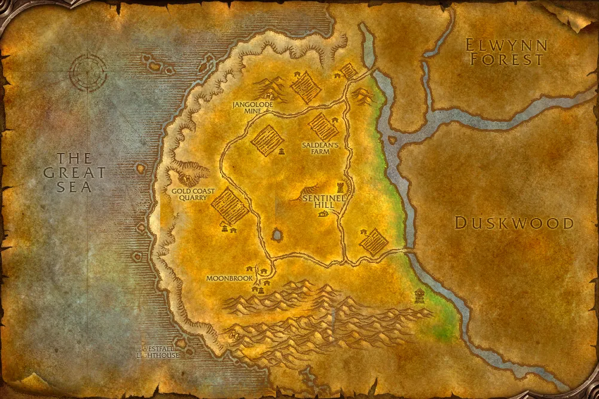

Accès
 Entrée Marche de l'Ouest 42.5, 71.7
Entrée Marche de l'Ouest 42.5, 71.7 5 joueurs · niveaux 15 à 22
5 joueurs · niveaux 15 à 22 6 quêtes · 7 boss
6 quêtes · 7 boss
Le point rouge marque l'entrée du donjon.
Toutes les zones sont sur notre carte interactive.
Sous Ruisselune, la Confrérie défias d'Edwin VanCleef prépare sa vengeance contre Hurlevent dans une ancienne mine, jusqu'au navire caché au fond.
📅 Mise à jour le 4 novembre 2026🛠 Patch 1.60.1.70755

Entrée Marche de l'Ouest 42.5, 71.7 5 joueurs · niveaux 15 à 22 6 quêtes · 7 bossLe point rouge marque l'entrée du donjon.
Toutes les zones sont sur notre carte interactive.
| Objet | Type |
|---|---|
| Cape de la confrérie | Dos |
| Casaque de corsaire | Torse |
| Lame de cruauté | Une main |
| Armure défias noircie | Torse |
| Objet | Type |
|---|---|
| Coutelas trancheur | Une main |
| Objet | Type |
|---|---|
| Attendrisseur de Macaron | Une main |
| Bâton à touiller de Macaron | Distance |
| Objet | Type |
|---|---|
| Lame du larron | Une main |
| Hache de Smite | Une main |
| Puissant marteau de Smite | Deux mains |
| Objet | Type |
|---|---|
| Bâton de Pierrebraise | Deux mains |
| Harpon de perforation | Deux mains |
| Ceinture défias noircie | Taille |
| Objet | Type |
|---|---|
| Pantalon de fusion | Jambes |
| Anneau somptueux | Doigt |
| Objet | Type |
|---|---|
| Cape de mineur | Dos |
| Targe plaquée or | Bouclier |
Butin d'après les données de WoW Classic : Forever a ajouté de nouveaux objets dans les donjons, la liste sera complétée en jeu. Seuls les objets de qualité inhabituelle et mieux sont listés. Passe la souris sur un objet pour voir ses caractéristiques (info-bulle Wowhead), ou clique pour ouvrir sa fiche.
Donnée par : Eclaireur Riell (Marche de l'Ouest)
Récompense : Epée courte endurcie · Dague Scrimshaw · Hache de perforation
Donnée par : Alba Fairmoon (Marche de l'Ouest)
Donnée par : Wilder Crispechardon (Hurlevent)
Récompense : Gants de mine poussiéreux · Bottes de tunnelier
Donnée par : Wilder Crispechardon (Hurlevent)
Récompense : Piolet vengeur
Donnée par : Shoni la Silencieuse (Hurlevent)
Récompense : Gantelets polaires · Baguette en martre
Donnée par : Gryan Stoutmantle (Marche de l'Ouest)
Récompense : Tunique de la marche de l'Ouest · Bâton de la marche de l'Ouest · Chausses de la marche de l'Ouest
Noms des quêtes, des PNJ et des objets d'après les données du jeu (Polestar, CC BY 4.0, et Factoruide/Questie).